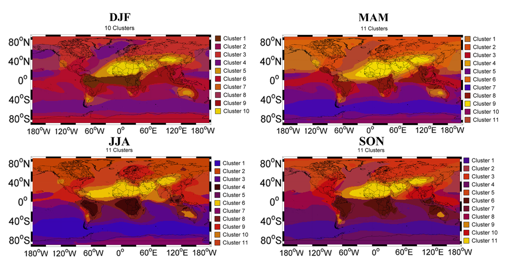

| |

Go to:
[Publications]
[Data]
[Related Work & links]
PUBLICATIONS
|
Taylor, M., Kazadzis, S., Amiridis, V., Kahn, R.A. (2015) Global aerosol mixtures and their multiyear and seasonal characteristics. Atmospheric Environment 116:112-129.
[ PDF]
[ Supplment]
[ Link to journal]
|
|
Taylor, M., Kazadzis, S., Amiridis, V., Kahn, R.A. (2015) A climatology of global aerosol mixture s to support Sentinel-5P and EarthCARE mission
applications. ATMOS 2015 Advances in Atmospheric Science and Applications, Heraklion, Crete, 8-12 June, 2015.
[ Abstract]
[ Paper]
[ Poster]
|
| |
DATA
- Global gridded (1x1 degree) cluster indices for multiyear mean global aerosol mixtures [Multiyear]
- Global gridded (1x1 degree) cluster indices for seasonal mean global aerosol mixtures: [DJF], [MAM], [JJA] and [SON]
- Table of descriptive statistics (mean, standard deviation, median and inter-quartile range) of
the 5-component (BC, OC, SU, DU and SS) percentage composition for each cluster of the
multiyear mean global partition [Multiyear]
- Tables of descriptive statistics (mean, standard deviation, median and inter-quartile range) of
the 5-component (BC, OC, SU, DU and SS) percentage composition for each cluster of
seasonal mean global partitions: [DJF], [MAM], [JJA] and [SON]
- A table of 50 optical and microphysical aerosol parameters extracted from the AERONET
inversion data record for each cluster of the mean multiyear global partition [Multiyear]
- Tables of 50 optical and microphysical aerosol parameters extracted from the AERONET
inversion data record for each cluster of the mean seasonal global partitions [DJF], [MAM], [JJA] and [SON]
RELATED WORK & links
- Model-Derived Global Aerosol Climatology for MISR Analysis: the [Clim-Likely] dataset
- Kahn, Ralph, Pranab Banerjee, and Duncan McDonald (2001). The sensitivity of multi-angle imaging to natural mixtures of aerosols over ocean. J. Geophysical Res., 106 (D16), 18219-18238. [Abstract] [PDF]
|
|